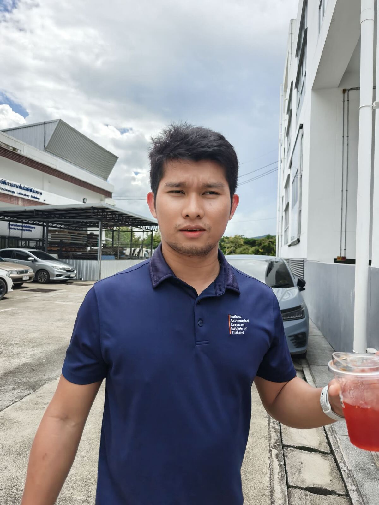
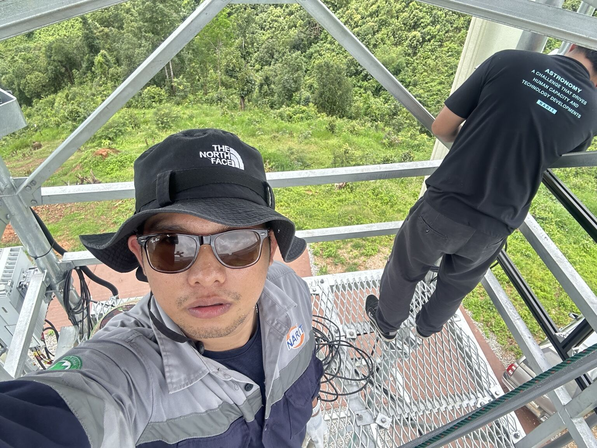
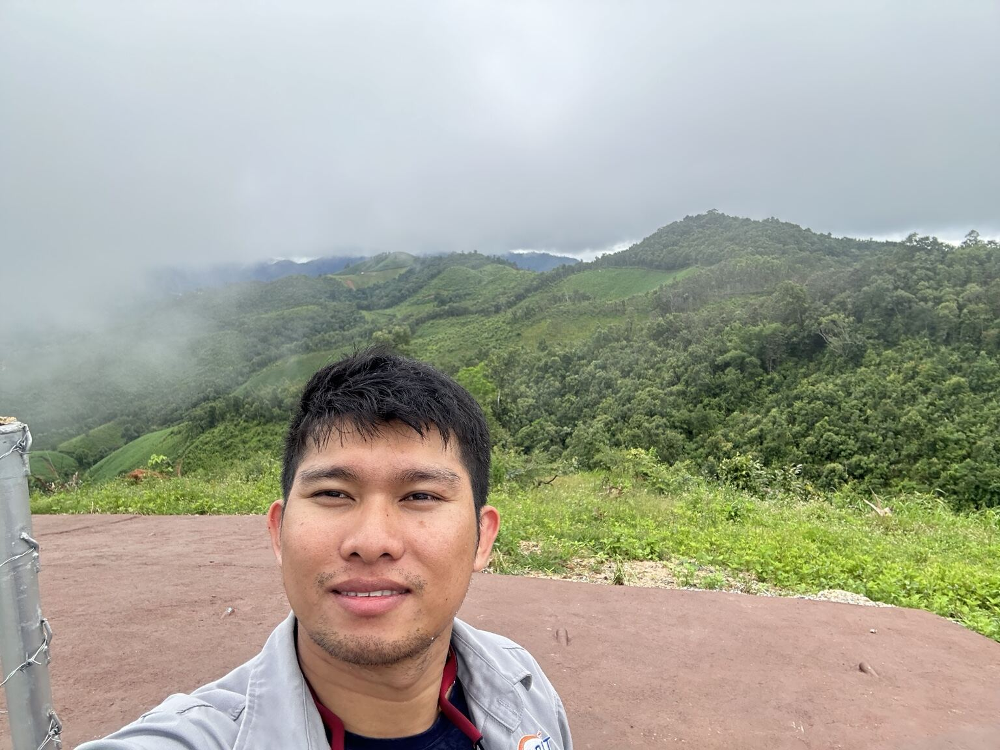
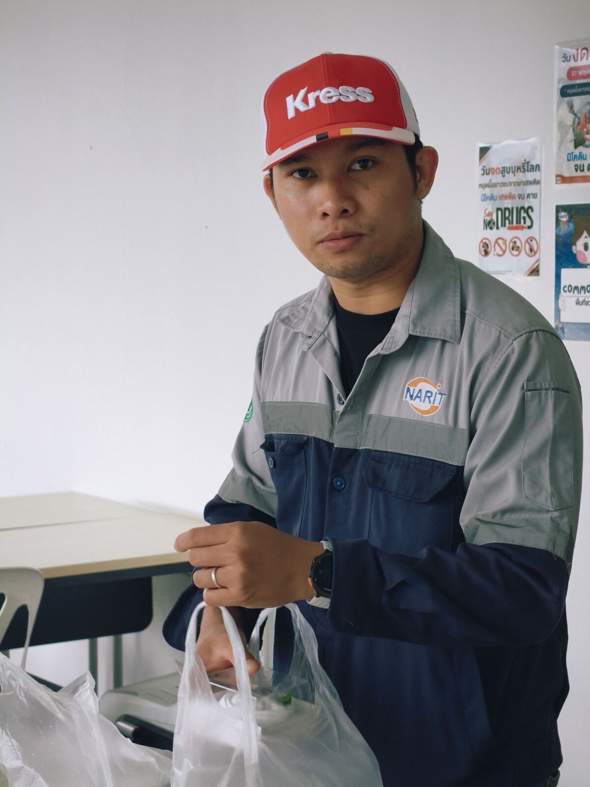
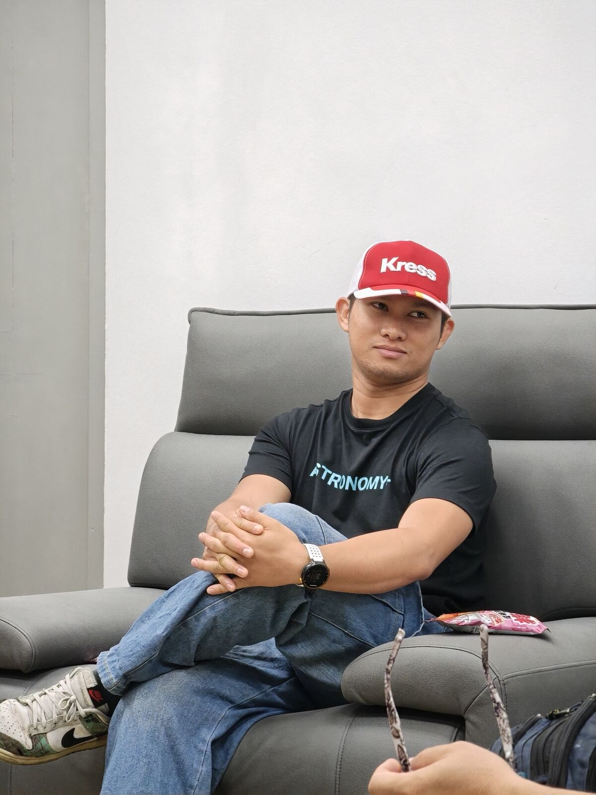
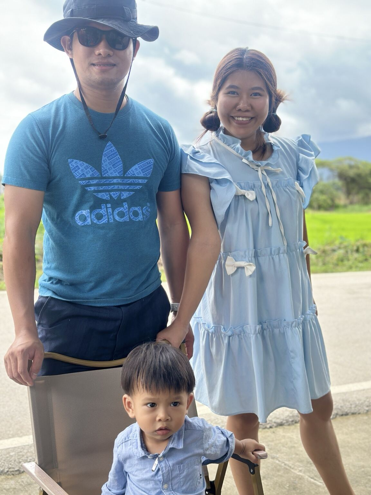

Thai Robotic Telescope
ระบบควบคุมหอดูดาวระยะไกล: PLC, HMI, เครือข่าย, GPS, ระบบโดมและอินเตอร์ล็อก เพื่อการปฏิบัติการที่เชื่อถือได้
ELECTRICAL · ELECTRONICS · OBSERVATORY
ผมคือ Psai Naruebest วิศวกรผู้พัฒนาระบบอิเล็กทรอนิกส์ ระบบควบคุม และโครงสร้างพื้นฐานสำหรับหอดูดาว ตั้งแต่แนวคิดจนถึงการใช้งานจริง

01 / PROFILE
วิศวกรไฟฟ้าและอิเล็กทรอนิกส์ ประจำศูนย์ปฏิบัติการหอดูดาวและวิศวกรรม สถาบันวิจัยดาราศาสตร์แห่งชาติ (NARIT) มีประสบการณ์ด้านการติดตั้ง บำรุงรักษา และพัฒนาระบบหอดูดาวทั้งในประเทศไทยและต่างประเทศ

งานภาคสนาม · ระบบควบคุม · โครงสร้างพื้นฐาน
02 / SELECTED WORK
ระบบที่เชื่อมโยงเครื่องกล ไฟฟ้า อิเล็กทรอนิกส์ และซอฟต์แวร์เข้าด้วยกัน
ระบบควบคุมหอดูดาวระยะไกล: PLC, HMI, เครือข่าย, GPS, ระบบโดมและอินเตอร์ล็อก เพื่อการปฏิบัติการที่เชื่อถือได้
ชุดล้อกรองแสงสองแกน 26 ตำแหน่ง ควบคุมด้วย STM32 พร้อม Ethernet, USB, encoder feedback และการป้องกันกระแสเกิน
ติดตั้งและสนับสนุนระบบที่ CTIO ประเทศชิลี, SRO สหรัฐอเมริกา, Gao Mei Gu ประเทศจีน และเครือข่ายหอดูดาวในประเทศไทย



03 / CAPABILITIES
STM32 · ESP32 · C · Altium · KiCad · UART · SPI · I²C · CAN · RS-485
PLC · HMI · Motor control · Encoders · Interlocks · Control cabinets
EMC/EMI · System integration · Test & measurement · Technical documentation
Telescope maintenance · Installation · Troubleshooting · Remote operations
04 / BEYOND ENGINEERING
เบื้องหลังระบบและงานภาคสนาม คือครอบครัวที่เป็นแรงขับเคลื่อนสำคัญ และ “ปรายใส” ผู้ทำให้ทุกโครงการมีความหมายมากกว่าเดิม
